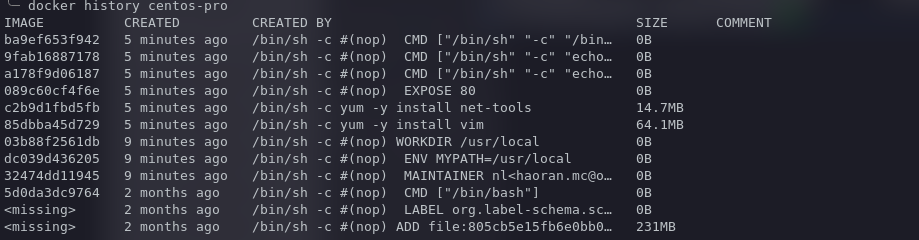

DOCKERFILE
Table of Contents
什么是 dockerfile
Dockerfile 就是用来构建 docker 镜像的构建文件。
使用 dockerfile 构建 docker 镜像
构建镜像命令：
- docker build -f dockerfile01 -t nl-centos .
FROM centos VOLUME ["volume01", "volume02"] CMD echo "---end---" CMD /bin/bash
这个 dockerfile 文件中说明了来源是 centos，会挂载两个目录。
- docker images：这里就能找到我们创建的 nl-centos 镜像了。
dockerfile 命令
- FROM
- 基础镜像
- MAINTATNER
- 镜像作者
- RUN
- 镜像构建的时候运行的命令
- ADD
- 向基础镜像中添加内容
- WORKDIR
- 镜像的工作目录
- VOLUME
- 挂载的目录
- EXPORT
- 暴露端口
- CMD
- 指定容器启动时要运行的命令，只有最后一个命令会生效，可被替代
- ENTRYPOINT
- 指定这个容器启动时要运行的命令，可追加命令
- ONBUILD
- 当构建一个被继承 DockerFile 的容器时，就会运行 ONBUILD 的指令（触发指令）
- COPY
- 类似 ADD，将文件拷贝到镜像中
- ENV
- 构建时设置环境变量
创建一个自己的 centos 镜像
dockerfile:
FROM centos MAINTAINER nl<haoran.mc@outlook.com> ENV MYPATH /usr/local WORKDIR $MYPATH RUN yum -y install vim RUN yum -y install net-tools EXPOSE 80 CMD echo $MYPATH CMD echo "----end----" CMD /bin/bash
- docker build -f dockerfile -t centos-pro .
…
Successfully built ba9ef653f942
Successfully tagged centos-pro:latest
$ docker run -it --name centos-pro01 centos-pro
[root@b034981bb626 local]# pwd
/usr/local
[root@b034981bb626 local]# vim
[root@b034981bb626 local]# ifconfig
eth0: flags=4163<UP,BROADCAST,RUNNING,MULTICAST> mtu 1500
inet 172.17.0.3 netmask 255.255.0.0 broadcast 172.17.255.255
ether 02:42:ac:11:00:03 txqueuelen 0 (Ethernet)
RX packets 27 bytes 3552 (3.4 KiB)
RX errors 0 dropped 0 overruns 0 frame 0
TX packets 0 bytes 0 (0.0 B)
TX errors 0 dropped 0 overruns 0 carrier 0 collisions 0
lo: flags=73<UP,LOOPBACK,RUNNING> mtu 65536
inet 127.0.0.1 netmask 255.0.0.0
loop txqueuelen 1000 (Local Loopback)
RX packets 0 bytes 0 (0.0 B)
RX errors 0 dropped 0 overruns 0 frame 0
TX packets 0 bytes 0 (0.0 B)
TX errors 0 dropped 0 overruns 0 carrier 0 collisions 0
[root@b034981bb626 local]#

CMD 与 ENTRYPOINT 的区别
FROM centos CMD ["ls", "-a"]
构建运行后会展示当前目录。
- docker run centos-cmd -l
- 这个 centos-cmd 镜像是通过 build 命令构建的。想追加一个参数，但是 CMD 不能追加，而是替换为 ls -l，没有这个命令，报错
FROM centos ENTRYPOINT ["ls", "-a"]
构建运行后也会展示当前目录。
- docker run centos-entrypoint -l
- 追加参数为 ls -a -l